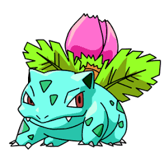

Ivysaur's appearance is very similar to that of its pre-evolved form, Bulbasaur. It still retains the turquoise skin and spots, along with its red eyes. Ivysaur's top fangs are now larger and are visible outside of its mouth. Also, its ears are now darkened to black in the center. Carrying the weight of the bud on its back makes Ivysaur's legs stronger. The most notable change is that the bulb is starting to bloom, with pink petals visible, and large leaves on the bloom bottom.